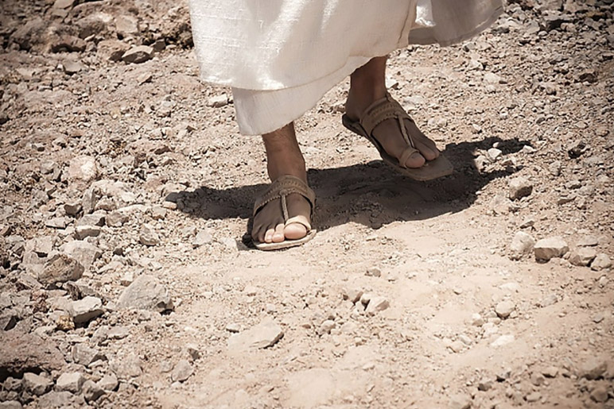

Leitura Orante
Leituras do Dia
Quarta-feira - São Jerônimo,
Presbítero e Doutor
(Verde -Ofício da memória)
30 de setembro de 2020


Oração do dia
Ó Deus, que destes ao presbítero são Jerônimo profundo amor pela Sagrada Escritura, concedei ao vosso povo
alimentar-se cada vez mais da vossa palavra e nela encontrar a fonte da vida. Por Nosso Senhor Jesus Cristo,
Vosso Filho, na unidade do Espírito Santo.
Leitura: Jó 9,1-12.14-16
1Jó respondeu a seus amigos e disse: 2“Sei muito bem que é assim: como poderia o homem ser justo diante de Deus? 3Se quisesse disputar com ele, entre mil razões não haverá uma para rebatê-lo. 4Ele é sábio de coração e poderoso em força; quem poderia enfrentá-lo e ficar ileso? 5Ele desloca as montanhas sem que elas percebam e as derruba em sua cólera. 6Ele abala a terra em suas bases e suas colunas vacilam. 7Ele manda ao sol que não brilhe e guarda escondidas as estrelas. 8Sozinho desdobra os céus e caminha sobre as ondas do mar. 9Criou a Ursa e o Órion, as Plêiades e as constelações do Sul. 10Faz prodígios insondáveis, maravilhas sem conta. 11Se passa junto de mim, não o vejo e, quando se afasta, não o percebo. 12Se ele apanha uma presa, quem ousa impedi-lo? Quem pode dizer-lhe: ‘O que está fazendo?’ 14Quem sou eu para replicar-lhe e contra ele escolher meus argumentos? 15Ainda que eu tivesse razão, não poderia replicar e deveria pedir misericórdia ao meu juiz. 16Se eu clamasse e ele me respondesse, não creio que daria atenção à minha voz”.– Palavra do Senhor.
Salmo Responsorial: 87(88)
Chegue a minha oração até a vossa presença!
Clamo a vós, ó Senhor, sem cessar, todo o dia, Minhas mãos para vós se levantam em prece. Para os mortos, acaso, faríeis milagres? Poderiam as sombras erguer-se e louvar-vos?
Chegue a minha oração até a vossa presença!
No sepulcro haverá quem vos cante o amor E proclame entre os mortos a vossa verdade? Vossas obras serão conhecidas nas trevas, Vossa graça, no reino onde tudo se esquece?
Chegue a minha oração até a vossa presença!
Quanto a mim, ó Senhor, clamo a vós na aflição, Minha prece se eleva até vós desde a aurora. Por que vós, ó Senhor, rejeitais a minha alma? E por que escondeis vossa face de mim?
Chegue a minha oração até a vossa presença!
Evangelho: Lucas 9,57-62
Naquele tempo, 57enquanto Jesus e seus discípulos caminhavam, alguém na estrada disse a Jesus: “Eu te seguirei para onde quer que fores”. 58Jesus lhe respondeu: “As raposas têm tocas e os pássaros têm ninhos, mas o Filho do Homem não tem onde repousar a cabeça”. 59Jesus disse a outro: “Segue-me”. Este respondeu: “Deixa-me primeiro ir enterrar meu pai”. 60Jesus respondeu: ”Deixa que os mortos enterrem os seus mortos; mas tu, vai anunciar o Reino de Deus”. 61Um outro ainda lhe disse: ”Eu te seguirei, Senhor, mas deixa-me primeiro despedir-me dos meus familiares”. 62Jesus, porém, respondeu-lhe: “Quem põe a mão no arado e olha para trás não está apto para o Reino de Deus”. – Palavra da Salvação.
Leituras do mês
TAGS
missao Amazonia evengel covid-19 indigenas novica papa francisco
Destaques
Província Stella Matutina
Rua São Benedito, 2146 - Santo Amaro - São Paulo - SP |
Tel. (11)
5547-7222


Província Spiritus Divinae Sapientiae
Rua Arnaldo Janssen, 320 - Cara-Cara - Ponta Grossa - PR |
Tel. (42) 3326 4091